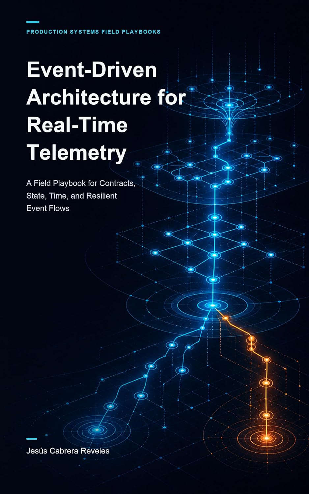

MY BOOK · WEDNESDAY

A FIELD PLAYBOOK FOR
Event contracts
State & time in streams
Resilient event flows
For engineers running real-time telemetry in production.
Production Systems Field Playbooks
On Amazon · search
“Jesús Cabrera Reveles”
Link in the post
geminislabs.com